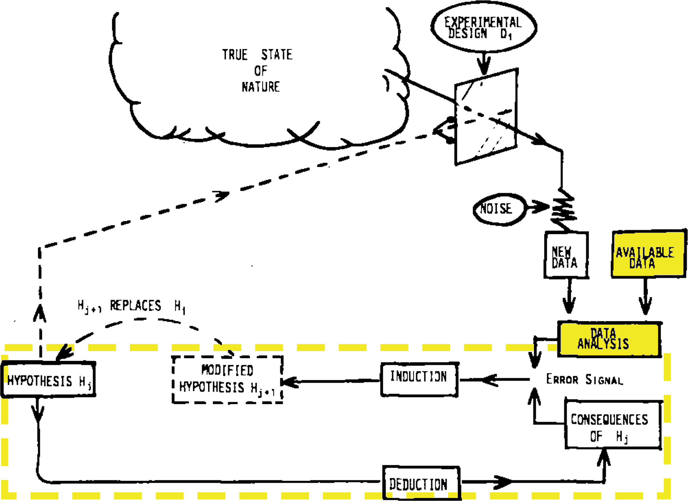

Simple models that provide actionable insights are more valuable than complex ones with inherent inaccuracies. Particularly in climate science, scientists need to avoid relying on other people’s models to simulate the future. To solve the problem, we must invest in better data and be willing to experiment.
I’ve become increasingly conflicted as I’ve continued to write and think. On the one hand, the premise of this series, that Earth can be healed with technology, has become more tangible—I believe that solutions are both possible and urgent. On the other hand, the capability of our current political, economic, and scientific structures to implement practical technological solutions has become less apparent. By continuing to “sound the alarm”, scientists are avoiding the hard part: Putting out the fire.
Let’s revisit the late statistician George Box, famous for the aphorism, “All models are wrong, but some are useful.” He explained 1 his perspective as follows:
Since all models are wrong the scientist cannot obtain a “correct” one by excessive elaboration. On the contrary following William of Occam he should seek an economical description of natural phenomena. Just as the ability to devise simple but evocative models is the signature of the great scientist so overelaboration and overparameterization is often the mark of mediocrity. [Emphasis mine.]
By Box’s measure, current climate models are marked for mediocrity when that’s the last thing we need. Their utility is in simplification, not in increased accuracy. Further, as we plunge headlong into a world of “artificial” intelligence, our growing reliance on computer models as “truth” is increasingly risky. We must design experiments to test these models with hard, primary data and then rigorously perform them. The danger of computer models is that while we know that they are inaccurate in one way or another, we don’t know where they’re wrong—the most demanding and thankless task in technology is debugging the code and the assumptions of other people’s models.
This installment was prompted by an article buried in the New York Times titled “A Surprising Climate Find,” written by Raymond Zhong. He’s got a better background than most, with a degree in Economics & Applied Math from Princeton. From the article, he doesn’t appear to subscribe to the bothsidesism storytelling recipe of his colleagues, so there’s an educational opportunity.
So, what’s so surprising?
We know that the Earth’s average temperature is rising, inevitably leading to melting ice and rising sea levels. This fact has pushed the governments of low-lying island nations such as the Maldives to prioritize climate policy. After all, a higher sea level will submerge their country, right?
Mr. Zhong covered a group of dedicated researchers testing this hypothesis with data. If you’d like to see this article in action with all the technological bells and whistles, it’s here .
By comparing mid-20th century aerial photos with recent satellite images, they’ve been able to see how the islands have evolved over time. What they found is startling: Even though sea levels have risen, many islands haven’t shrunk. Most, in fact, have been stable. Some have even grown.
It turns out that a slowly rising sea level affects the natural forces that created the islands in the first place, allowing them (in some instances) to rise along with the water level! The sad thing is, this isn’t a recent discovery. These researchers have been working for nearly a decade to study how land area changes with sea level.
How is this related to the peril of climate models? Well, the photo above says it all. What you see is a patch of green (where photosynthesis is sucking carbon dioxide out of the air) surrounded by a shallow ocean. The island’s land area varies with time; some land has been stripped of vegetation, and some of the sea is shallow enough to grow kelp. How is this modeled? The sizes of all of the islands in the Maldives are smaller than one pixel of the best climate models, so they are modeled as if they were part of the Indian Ocean!
While it’s not surprising that the climate models are wrong, the question is, are they useful? Certainly not for the Maldives, since models only predict that the sea level will rise gradually as more arctic ice adds volume to the ocean. They do not predict how the islands will respond to that change. While the efforts of data-centered researchers may influence future models, will that make them more valuable? On the other hand, should we throw up our hands and walk away because we aren’t 100% sure of the future? Here’s what George Box (the statistical modeler) suggested in 1976:

By emphasizing computer models, scientists tend to focus on only the highlighted boxes. Maybe they’ll refine the model to minimize the “error signal” ” 2 . But, while statistical errors are generally reported, they are widely ignored when proposing conclusions. More troubling is that the inductively generated hypotheses from such complex models tend to be difficult to validate experimentally because they can only rely on historical data of variable quality.
Scientists studying the Maldives have shown that even the most straightforward conclusions of climate change models (e.g., that sea level rise will submerge coastal areas) require more data than the models use.
I have argued, sometimes strenuously, that the “land use change” component of climate prediction models is at odds with the data and that human modelers’ ideological biases have contributed to these essential errors. Without conducting straightforward experiments (such as the one I proposed 3 ) while relying on complex, over-parameterized models (and the mediocre science they encourage), humanity is in danger of making catastrophic decisions that will make solving the problem even more difficult.
The fundamental goal of these installments is to describe ways that technology can help to return the planet to its pre-industrial stability (i.e., “heal”). But that will be impossible if we’re unwilling to take even the most straightforward step (such as exploring whether we can create clouds over the ocean) because of the fear of the unknown.
Box, G. E. P. (1976). Science and Statistics. Journal of the American Statistical Association , 71 (356), 791–799. doi.org
Notably, this is the core of “machine learning”, the foundational computational algorithm of “artificial intelligence.” As others and I have noted, AI frequently generates plausible but incorrect conclusions (“hypotheses” in the diagram) that the field refers to as “hallucinations”. It’s why Netflix thinks I like Bollywood movies (long story).
[See earlier posts in this series]